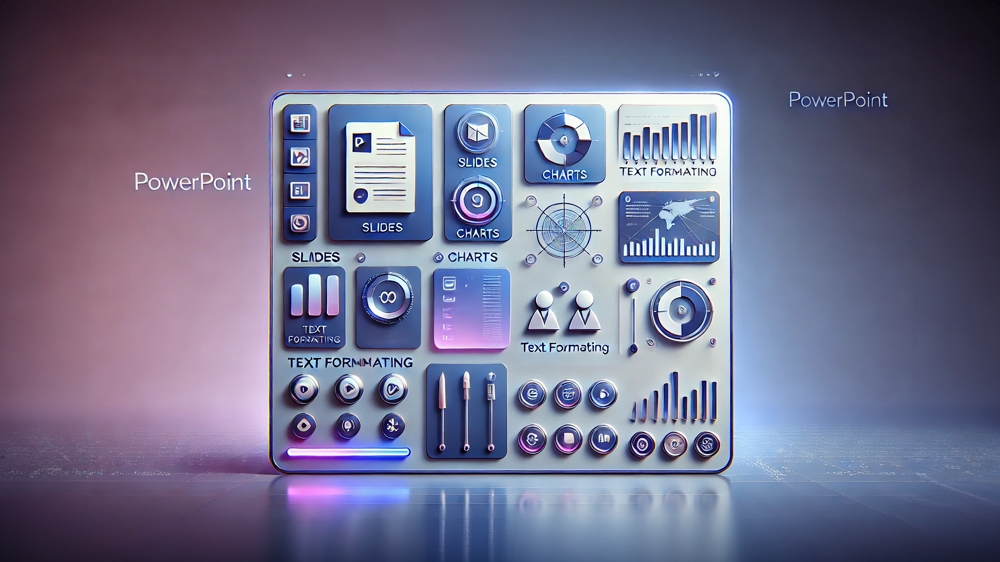
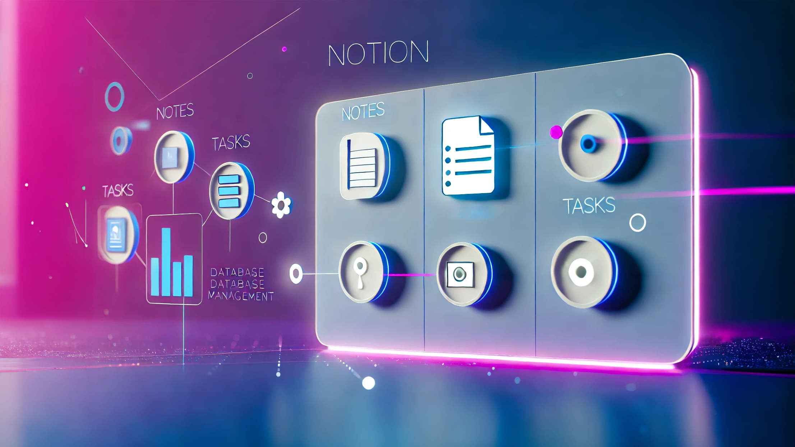

Projekt Titel
Genauere Beschreibung für das Projekt.
Loading Portfolio...
Willkommen auf meinem Portfolio
Entdecken Sie meinen Lebenslauf, mein Motivationsschreiben und Projekte.
Ich bin im ersten Lehrjahr als Applikationsentwickler bei Swisscom und möchte meine Kenntnisse in ASP.NET, C# und Webtechnologien im Projekt 'ASP.NET / C# Entwickler für Marketing' einbringen. Hier sehe ich die Möglichkeit, wertvolle Erfahrung in der Weiterentwicklung datenbasierter Web-Applikationen und Marketing-Analytics zu sammeln.
10. Klasse Informatik, Schule Benedikt Luzern
Vertiefung in Informatik und Grundlagen der Programmierung.
Kantonsschule Seetal, Gymnasium
Allgemeinbildung mit Schwerpunkt auf Mathematik und Naturwissenschaften.
Primarschule, Hitzkirch
Grundlegende Schulbildung mit Fokus auf Sprach- und Sozialkompetenzen.
Muttersprache
Schulkenntnisse (seit der 3. Klasse)
Schulkenntnisse (seit der 5. Klasse)
Benutzerfreundliche Website für Aloeimport mit Bestellfunktion entwickelt.

Eigenes Präsentationstemplate nach Swisscom-Richtlinien erstellt.
Strukturiertes KI-Lernen in Notion für zukünftige KI-Projekte.

Komplette Organisation meiner Ausbildung in Notion.
Plan zur Entwicklung einer eigenen KI nach Abschluss des Lernprojekts.
Genauere Beschreibung für das Projekt.
Hallo Alexander,
CRM Monitor ist ein Projekt, das sich von den anderen Projekten abhebt. Die Daten mit Marketing zu verbinden, klingt für mich sehr spannend, und ich bin überzeugt, dass mir während dieses Projekts nicht langweilig wird. Ich bin sehr lernbereit und werde die Chance in diesem Projekt nutzen, um neue Fähigkeiten zu entwickeln.
Meine Art und Weise, mit Menschen umzugehen, ist sehr offen und nicht von Vorurteilen geprägt. Ich denke, diese Eigenschaft ist sehr wichtig, um eine gute Verbindung zum Team zu haben. Spass gehört in meinen täglichen Alltag, jedoch achte ich immer darauf, wann dieser angebracht ist. Die Konzentration bei mir ist immer da, wo sie sein muss.
Ich hoffe, ich konnte dich, Alexander, von mir überzeugen und freue mich auf ein ausführliches Feedback.
Freundliche Grüsse
Nino Meier